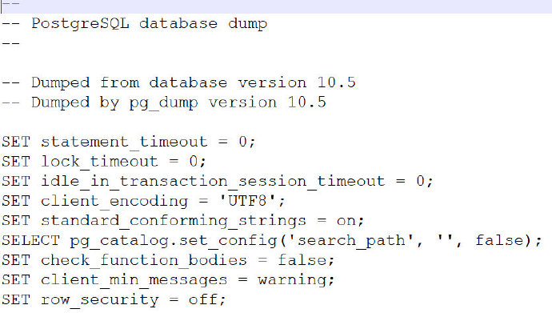
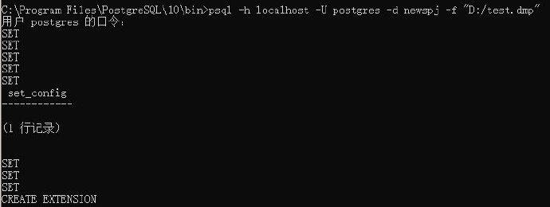

SQL dump
Backup-SQL Dump
Dump方法是生成含有SQL命令的文本文件。通过系统中自带的pg_dump指令可以将指定库中的表及其表中的数据以SQL指令的形式dump到一个文件中
pg_dump -hlocalhost -U postgres -p 5432 -d spj -f "D:/test.dmp"
这个命令可以在任意可以连接数据库的远程机器上运行，但他需要读表的权限，所以大多数是用superuser用户运行这个命令。连接指定的数据库可以使用-h host和-p port命令选项。默认的host是localhost或由PGHOST环境变量指定。使用-U选项设置连接数据库的用户。
查看生成的dmp文件：

Restore
create database newspj
psql -h localhost -U postgres -d newspj -f "D:/test.dmp"

文件系统级备份
一个备份的策略是直接拷贝PostgreSQL的存储文件
tar -cf backup.tar /usr/local/pgsql/data
注意点：
- 数据库服务必须关闭，才能得到有用的备份。一个折中的办法是阻止所有连接。在恢复数据前也要关闭服务。
- 如果你已经查看了数据库文件系统的目录结构，你可能想尝试备份和恢复某个特定的表或库。这是不行的，因为没有提交日志文件，这些目录中的信息是不能用的，
pg_clog/*包含所有事务的提交状态。一个表文件只有和这些提交状态信息一起才能使用。当然只恢复一个表文件和关联的pg_clog数据也是不行的，因为数据库的其他表都不可用了。所以文件系统备份必须整体备份数据库。
连续归档
思想
- 在任何时候，PostgreSql在pg_xlog/目录中维护一个写日志(WAL)。日志文件记录了数据库的每次修改。这个日志的主要目的是崩溃安全：如果系统崩溃了，数据库可以通过从上次的检查点“回放”日志来恢复数据库。然而我们可以用日志做备份的第三种策略。你可以混合一个文件系统级别的备份和WAL文件备份。如果需要恢复，我们先恢复文件系统备份，再回放WAL的内容，使数据库恢复到当前状态。
- 增量备份的思想，每次先备份归档文件（基础备份），再备份WAL文件（这时候只需要备份在备份时产生的WAL文件和之后的WAL，之前的WAL数据会被删掉）
操作
设置WAL归档
在postgresql.conf文件中修改：
wal_level = archive
archive_mode = on # allows archiving to be done
archive_command = 'copy "%p" "D:\%f"'
需要重新启动PostgreSQL
创建基础备份
最简单的基础备份方法是使用pg_basebackup工具。生成基础备份需要大量的时间，且在备份过程会影响系统性能。但是，如果你运行服务时禁止了full_page_writes，你可能注意到在运行备份时性能下降了。每次创建备份后都会删除之前的WAL日志，开始归档备份期间及后续的WAL日志信息。
pg_basebackup -D backup -h localhost -U postgres -Ft -z -P
利用备份恢复
参考这里